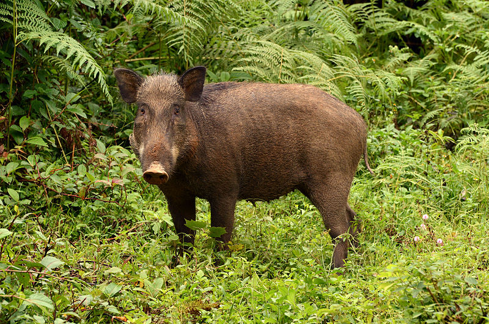
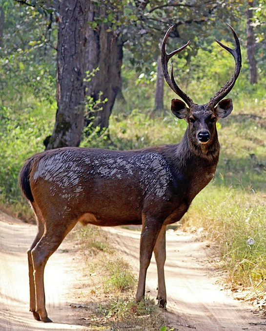
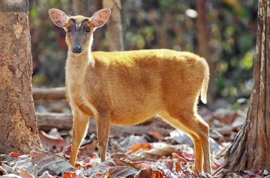
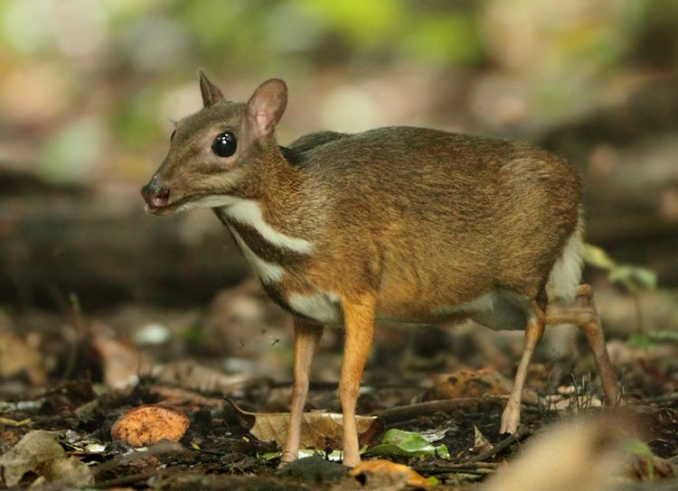
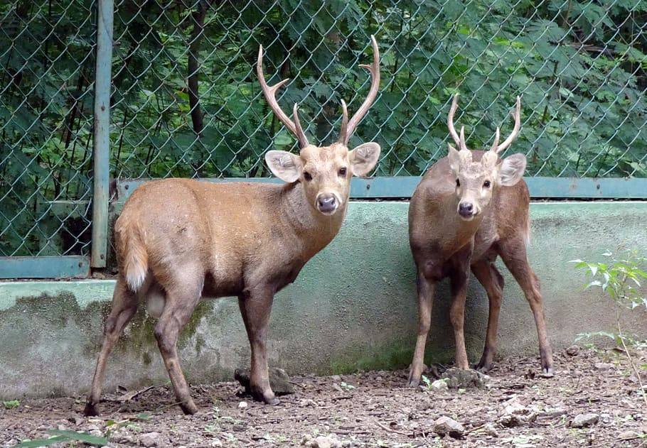
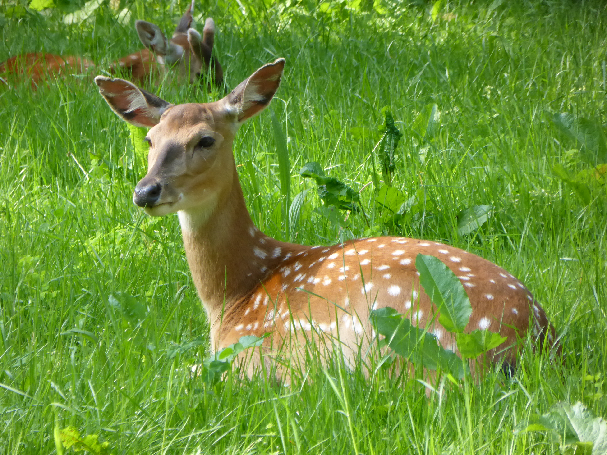
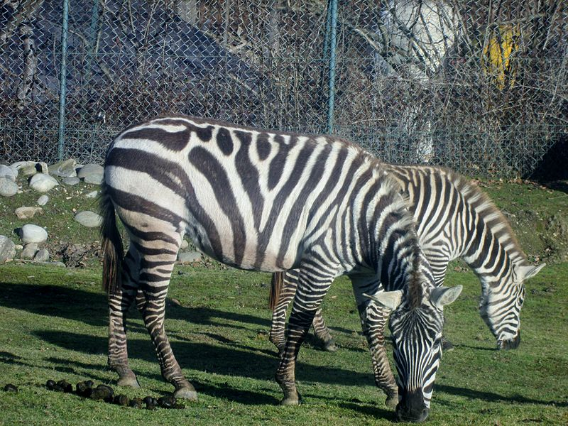

Boar is a species of pig living in Eurasia, North Africa, and the Big Sunda Islands. Humans are expanding their range, making them one of the largest mammals in the world. They are classified by IUCN as a least concerned species. Perhaps wild boars living in South-East Asia entered the Pleistocene early, and are present almost throughout the Old World. As of 2005, there were 16 recognized subspecies, divided into three groups based on skull height and lacrimal bone length. This species lives in a matriarchal group of young males, females and their offspring. Adult males usually live alone unless during the breeding season. Gray wolves are the main natural enemy of wild boars in most of their habitats. They are the ancestors of most domestic pigs and have been a hunting species for thousands of years.
MtDNA studies show that wild boars are native to islands in Southeast Asia such as Indonesia and the Philippines, and then spread to Eurasia and North Africa. The earliest fossil discovery of this species came from both Europe and Asia, and dates from the early Pleistocene. By the end of the Villafranchian, S. scrofa largely relocated the related S. strozzii, a suid ancestor able to adapt the swamp to modern S. verrucosus across Eurasia, making its numbers decrease in Asia. Its closest wild relative is Malacca's Borneo bearded pig and the islands surrounding the area.
Wild boar is a very versatile omnivore, with a variety of choices in human food rivals. Their diet can be divided into four categories: rhizomes, roots, tubers, and onions, all dug throughout the year. Berries, berries and nuts are consumed when ripe and dug from the snow when abundant. Leaves, bark, twigs and shoots, along with trash. Earthworms, insects, molluscs, fish, rodents, insectivores, bird eggs, lizards, snakes, frogs and scavengers. Most of these prey are consumed by boars during the warm period.
Sambar deer is a large deer species, distributed in Sri Lanka, Nepan, India, China, and Indochina. They are the largest deer species in the tropics and subtropics. Nai likes to eat along the beach, loves to swim and play in the water. They are fast-moving, currently endangered species.In Vietnam, the native deer species distributed here are black deer, a subspecies of deer.
The deer is tall, strong, 1.8 to 2 meters long, 1.4 to 1.6 meters high at the shoulders and weighs about 2 quintals when growing up. Their most prominent feature is on the neck with a dark brown stripe running from the back to the tail. The platform is very hard, able to climb rocky hills, with 4 long, slender and strong legs, can easily move on steep cliffs, worthy of a "climbing master". Nai has a fairly long face, large ears standing upright on the top of the head, very large and very gentle eyes. In addition, their trajectories are highly developed, when they are angry or frightened, their glands are immediately enlarged according to the size of their eyes. Males and females are of different colors, males on the back are usually dark brown or dark brown, underneath are yellowish white, and females are lighter in color, red. Males have long horns, each with three branches. The horn grows from the back of the head, outwards, forming a u-shaped, smooth top, rough lower part, the bottom has a horn shaped like a mill. The horns of elk are very long, usually 70 pieces 80 cm long, the longest can be up to 125 cm. The deer feed on young leaves, young shoots, young grass, shrubs and fallen fruits. Deer grow their horns when they are two years old and mature at 20 months. Deer live alone, only pairing during the breeding season, which is spring and autumn.
Muntiacus, is a deer species of the genus Muntiacus. Mang is perhaps the oldest known deer, appearing some 15-35 million years ago based on fossil remains found in Miocene deposits in France and Germany.
The species that still carry the forest today are often of primary origin in Southeast Asia, India. Bring the power plate in Taiwan, South China and the islands of Indonesia. Reeves was later introduced to England, and is now widespread in Britain.
Muntiacus are tropical animals with no seasonal estrous cycle. Therefore, when moving to temperate areas, mangroves can be delivered to lungs at any time of the year. Males have short antlers. These antlers may grow back, but they tend to use teeth biting to protect the territory rather than using gauze.
Their food is leaves, trees, berries and grass.
Tragulus versicolor is a species even clogs in the Cheo family, is also an endemic species in Vietnam. Until 2004, it was generally considered a subspecies of Napu chevrotain (T. napu), whether it resembles Indonesian camo or Kanchil chevrotain (T. kanchil). The latest information of this rare cheo still has many unanswered questions, so for a while, some people thought they were extinct. But perhaps because their knowledge of chevrotain is very limited, biologists have not yet determined how to identify it to distinguish it from other species. Moreover, science does not fully understand their habitat, so the extent of distribution is still somewhat presumptive. In November 2019, a team of scientists photographed a silver cradle in a forest in Vietnam for the first time in 30 years of absence. The main threat to gray back crosshairs is vandalism. Humans also contribute significantly to hunting, trapping and killing many wildlife species in Vietnam.
Tragulus versicolor is the smallest even animal, with a mundane and deer-like appearance, but no tear glands. The body is covered in reddish-brown hair, the chest and under the abdomen have 3 white hairs parallel to the body, smooth, short and sleek hairs. Males and females do not have horns, but some adults have fangs that stick out at the edge, males have fangs longer than females, and upper canines grow out of the mouth. The small chevrotain is the smallest ungulate species in the world. With a size not bigger than a domestic cat, the head-to-body length is about 400 to 480 mm, weight reaches from 0.7 to 2 kg (maximum body length is also about 30-50 cm, weight amount of 1.6-2.6 kg). The small face was quite like a mouse, the four legs were as thin as a stick.
Tragulus versicolor As solitary and foraging animals, it has the ability to adapt to many different environments but mostly in forests and upland fields. Go for food during the day and at night, or in a private area covered with dense trees. Cheo is shy, when he encounters his enemies quickly escaping. The estrus and mating season live in mating around June and July. Before mating, the female uses the hind leg to knock the ground 8 times within 3 seconds to inform the male. This animal is about 140 days pregnant. Give one at a time at the end of the rainy season when food is plentiful.
Hyelaphus porcinus is a species of mammal in the Deer Deer family, the even-toed Clogs. This species was described by Zimmermann in 1780. In Vietnam, the yellow deer lives in the Central Highlands in swamp areas of Kontum, Dak Lak, Lam Dong, and Dong Nai provinces. The total number in Vietnam is only a few hundred. Because of the danger of genocide, yellow deer is listed in the Vietnam Red Book.
The average size in the even toe, body length is about 1.3-1.5m. Weight 50 - 60 kg. The short coat is soft, yellowish or grayish. Long back hair rough but not forming mane. Small horn, short, with 2-3 branches (two branches, one main branch) smaller than Nai horns, but larger and longer than horns. The horn base is shorter than the horn sole.
The food is grass leaves in humid areas along marshes and rivers. The reproduction of the Golden Deer in Vietnam has not been studied, according to literature in foreign countries: they are estrous and paired in September and October. The gestation period is 8 months. Each calving produces 1 child a year. They live in open forests along swamps, rivers and streams, at an altitude of not more than 1000m above the sea. Nighttime foraging, daytime resting in dense reeds or swamping in muddy water. Live a group of 20 - 30 birds, can be confused with a deer herd or a deer. Their natural predators may be attacked by large predators.
Domestic: Kontum, Dak Lak, Lam Dong and Dong Nai. World: Pakistan, Nepal, Sri Lanka, China, Myanmar, Thailand, Cambodia.
Hyelaphus porcinus narrow distribution in some areas in places where water bodies are swampy. Small numbers are about 200 - 300 birds. Their habitats are increasingly narrowed by exploiting humid areas for agriculture and building reservoirs.
Cervus nippon pseudaxis is a subspecies of star deer. Compared with other deer deer subspecies, Vietnamese deer deer are smaller in size due to their tropical environment. A group of Vietnamese stag deer has long been present in northern Vietnam and may be in southwestern China but is now extinct in the wild. Some are bred and with plans to return the species to the wild.
Medium size. Body weight 60 - 80kg. Males have horns 2 to 4, smaller than deer horns. The body is covered with short, smooth, golden-brown hairs, with 6 to 8 rows of white dots (like stars) along the sides of the body. Gray streaks of hair extending from the nape along the back of the spine. Light yellow belly. Four small slender legs are grayish yellow. The tail is short, above grayish gold, on the white tail, on the white tip.
Food is grass, leaves. Currently, there are 75 species of plants as food for them, the most favorite are sap leaves such as fig, fig, jackfruit ... of Moraceae Mulberry family. In rearing conditions, reproductive deer are concentrated in March, April and May. The estrus period is concentrated in August and September. The gestation period is 215 - 235 days. Give 1 birth per year, give birth to 1 child each. Parenting period 3-4 months. Males give velvet usually in March - April of the calendar year. In addition to nature, deer live in open forests on mountains and prefer dry places. Live in groups, meek and shy. In feeding conditions often suffer from some digestive diseases, lung diseases, viral diseases of nails, blood parasites.
Domestic: Previously in Cao Bang, Bac Kan, Quang Ninh, Ha Tay (Ba Vi), Thanh Hoa, Nghe An and Ha Tinh. Currently in nature almost no longer. Stars are being raised in: Ha Giang, Son La, Ha Tay, Vinh Phuc, Hai Phong, Hanoi (Zoo), Ninh Binh, Nghe An, Ha Tinh, Dak Lak, Binh Duong, Ho Chi Minh City (Zoo). World: China, Korea, Japan, Russian Federation.
Equus quaggais the most common and widely distributed zebra, which has been seen on plains and pastures from southern Ethiopia stretching through eastern Africa as far south as Angola and southeast Africa. Plain zebras are now smaller in number than before due to human activities such as hunting for their flesh and skin, as well as encroachment of their habitat, but they remain is common in no hunting areas.
Plain zebras are of average size, well toned body and relatively short legs. The adult zebra is about 1.4 meters high from the shoulders down, about 2.3 meters long, and weighs about 230 kg. Like other zebras, they have dark black and white stripes and do not have any two individuals that look alike. It is now recognized that there are three subspecies, plus two other subspecies that are now extinct. All have vertical stripes on the anterior part of the body, which tend to become horizontal at the back of the body. The northern population has clearer and narrower stripes; The southern population has a variable number of stripes but less on the lower body, legs and back. The first subspecies described as Quagga, now extinct, has a brown back. (Technically, since Quagga was first described as E. quagga, the zoological correct name for the most common form of the plain zebra is E. quagga burchelli..
Plain zebras are highly social and generally form small family groups consisting of a male, one, two or several females and young offspring near that time. Groups are permanent and group sizes tend to vary with habitat: In areas where food is poor, smaller groups. Over time, lowland zebra families grouped together into large herds, possibly with other groups or with other herbivores, primarily of the wildebeest. They are the favorite prey of lions, cheetahs, hyenas, jackals and crocodiles. However, the zebra stripes on a zebra's camouflage among savanna patches help them escape predators. And if cornered, zebras can fight back. Many times, the lions that have been broken by a zebra broke their right leg. Unlike many other large ungulates in Africa, plain zebras prefer (but do not necessarily need) short grass to graze. As a result, their distribution range is larger than that of many other species, even in forested areas, and usually they are the first herbivores to appear in newly grassed areas. Only after they had gnawed and trampled on the long grass did the gazelle and gazelle arrived. However, to protect themselves from predators, the plain zebras rest overnight in open areas that can be observed well at night. They eat a variety of different grasses, preferably young and fresh grass whenever possible, but they also eat young leaves and twigs..
8 Ton That Thuyet, My Dinh, Tu Liem,
Ha Noi, Viet Nam.
0966469746 (Do Van Huan)
0666729716 (Nguyen Minh Nghia)
0522697743 (Duong Thanh Binh)
0849818969 (Le Van Phuong)
0373485924 (Nguyen Thanh Lam)
KawasakiZoo@gmail.com